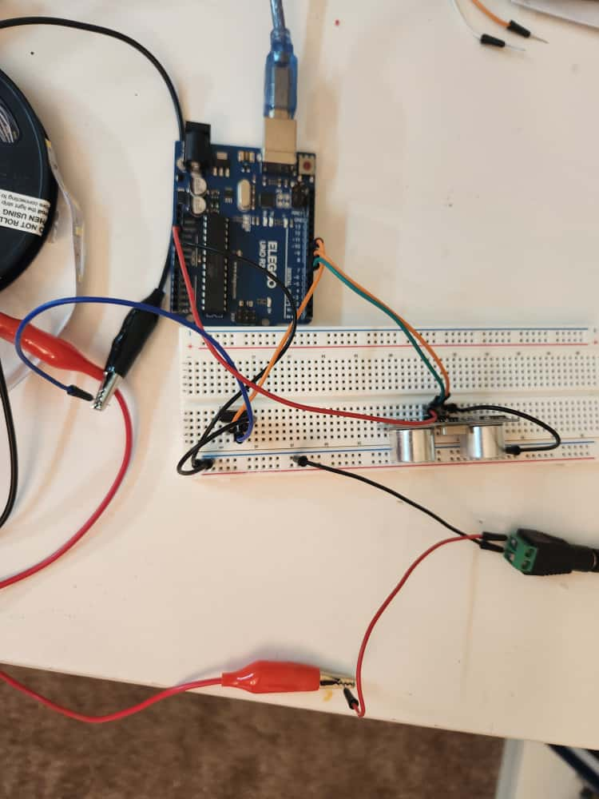
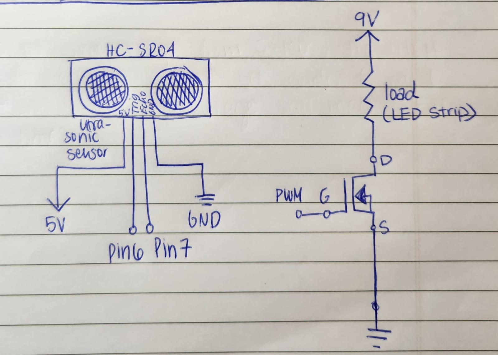
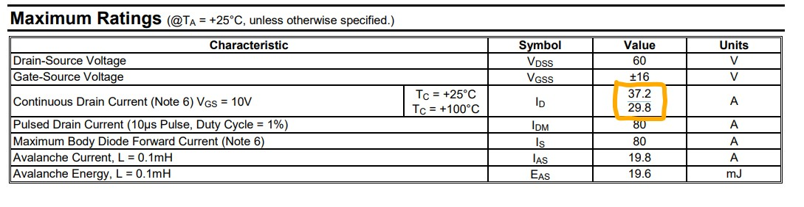
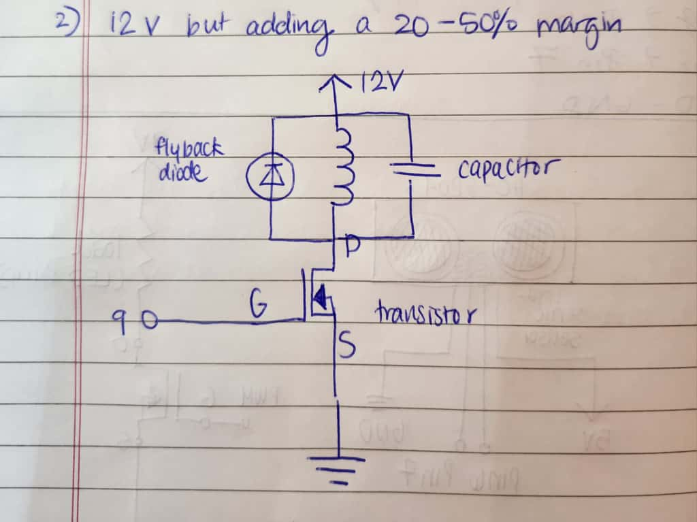
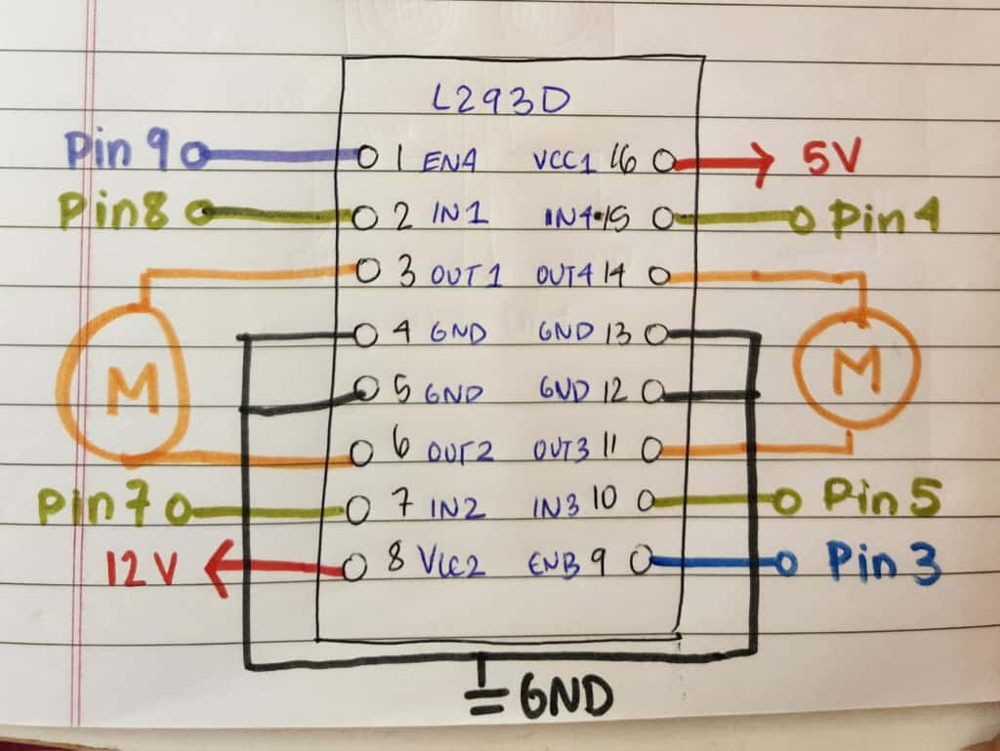

Here is the picture of my circuit.

Here is the gif of my circuit when I place my hand in front of the ultrasonic sensor

Here is the picture of my schematic.
Here is the picture of my circuit.
Here is the gif of my circuit when I place my hand in front of the ultrasonic sensor
Here is the picture of my schematic.
//This code is to control the ouptut of a higher voltage device (LED Strip) using an ultrasonic motor
//Used references from: https://projecthub.arduino.cc/Isaac100/getting-started-with-the-hc-sr04-ultrasonic-sensor-7cabe1
#define led_pin 9 // defining the the MOSFET gate pin
#define trig_pin 6 // defining the 6 pin for the ultrasonic trigger
#define echo_pin 7 // defining the 7 pin from the ultrasonic echo
void setup() {
Serial.begin(9600); //intializing to set up the serial monitor using the baud value on screen
pinMode(trig_pin, OUTPUT); //setting the trigger pin as an output
pinMode(echo_pin, INPUT); //setting the echo pin as an input
pinMode(led_pin, OUTPUT); //setting the led pin as an output
analogWrite(led_pin, 0); // the LED strip starting as off
}
void loop() {
//Trigger the ultrasonic sensor
digitalWrite(trig_pin, LOW); //Starting with low
delayMicroseconds(2); //waiting 2 microseconds
digitalWrite(trig_pin, HIGH); // pulsing the trigger pin
delayMicroseconds(10); //waiting 10 microseconds
digitalWrite(trig_pin, LOW); //turning it back to low
long duration = pulseIn(echo_pin, HIGH, 30000); //reading and cutoff echo after 30000 microseconds
float distance_cm = duration * 0.034 / 2.0; //using the speed = distance/time equation and using speed of sounds in centimeters per micorsecond as 0.034 cm/µs
distance_cm = constrain(distance_cm, 5, 150); // Making sure the range is contrained between 5 and 250 cm
int brightness = map((int)distance_cm, 5, 150, 255, 0); //Mapping this input distance to LED brightness
analogWrite(led_pin, brightness); //writing this value to the pwn pin to control LED brightness
//Sendng the values to the serial printer for the distance and brightness
Serial.print("Distance (cm): ");
Serial.print(distance_cm);
Serial.print(" Brightness: ");
Serial.println(brightness);
delay(100); //waiting betweem readings
}
According to the datasheet, the max current would be 37.2A between pins 2 and 3 of the MOSFET. 
This is my schematic showing all the parts needed for this DC motor circuit. 
The parts include: The Arduino Uno Board: https://docs.arduino.cc/resources/datasheets/A000066-datasheet.pdf The N-MOSFEt Transistor: https://cdn.sparkfun.com/assets/4/1/1/8/0/RFP30N06LE.pdf The Flyback Diode: https://components101.com/sites/default/files/component_datasheet/1N4001.pdf The Capacitor, since the circuits maximum votage is 12V, I sited a 25V capacitor that gives a safe margin: https://www.digikey.com/en/products/detail/panasonic-electronic-components/EEU-FR1E221/9921023 The 12V Power Source: https://www.farnell.com/datasheets/2720924.pdf The 3-6V DC Motor: https://product.mabuchi-motor.com/detail.html?id=9Used this website for reference: https://lastminuteengineers.com/l293d-dc-motor-arduino-tutorial/ 
Here is my pseudocode for how I would set this up: Set up pins for both motor A and motor B //Start with both motors forward: Set Motor A forward Set Motor B forward Delay //Then both motors backward: Set Motor A backward Set Motor B backward Delay //Then Motor A forward, Motor B backward to turn right Set Motor A forward Set Motor B backward Delay //Then Motor A backward, Motor B forward to turn left Set Motor A backward Set Motor B forward Delay